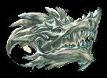
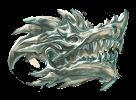

Najwyższa Czaszka (ang. Sovereign Skull) to nieskazitelnie piękna czaszka smoka Abraxasa, pierwszego smoka, jaki istniał na świecie. Jest to starożytny artefakt, obłożony większą liczbą zaklęć niż jakikolwiek inny przedmiot w materialnym świecie. Stanowi najpotężniejszą ochronę śmiertelników przed smokami i ostatnią linię obrony w przypadku ich ataku.
 

Czaszka wzmacnia ludzką niewiarę w istnienie świata magicznego, czyniąc ją wręcz szkodliwą dla smoków. Dopóki artefakt pozostaje nienaruszony, smokom niezwykle trudno jest zaatakować śmiertelników, którzy nie są świadomi świata magii. Ponadto społeczność, która odrzuca wiarę w magię, staje się całkowicie niedostępna dla smoków i niemożliwa do naruszenia.